1เริ่มต้นใช้งาน
โปรแกรมนี้ช่วยวางแผนว่าสินค้าจะใส่ตู้คอนเทนเนอร์หรือรถบรรทุกได้กี่ชิ้น หนักเท่าไร และควรวางตรงไหน ใช้งานผ่านเว็บเบราว์เซอร์ (Chrome หรือ Edge) ไม่ต้องติดตั้งโปรแกรม
สิ่งที่โปรแกรมทำได้
- คำนวณว่าใส่สินค้าได้กี่ชิ้น/กล่อง/พาเลท และจัดเรียงให้อัตโนมัติ
- ตรวจน้ำหนักเกินพิกัด น้ำหนักลงเพลารถ จุดศูนย์ถ่วง และ VGM ของตู้คอนเทนเนอร์
- แสดงภาพ 3 มิติและ 2 มิติ พร้อมให้ลากกล่องปรับตำแหน่งเองได้
- พิมพ์ใบส่งของ รายงาน และใบงานโหลดทีละขั้น
วิธีเปิดโปรแกรม
เปิดลิงก์ที่ฝ่าย IT ให้ไว้ในเบราว์เซอร์ หรือดับเบิลคลิกไฟล์ index.html ในโฟลเดอร์โปรแกรม ครั้งแรกที่เปิดจะมีงานตัวอย่างจัดเรียงไว้ให้ดู
ขั้นตอนหลักมี 3 ขั้น เรียงจากบนลงล่างตามแผงด้านซ้าย
- เลือกตู้หรือรถ
- ใส่รายการสินค้า
- กดปุ่ม จัดเรียงอัตโนมัติ แล้วดูผลในภาพตรงกลางและแผงสรุปด้านขวา
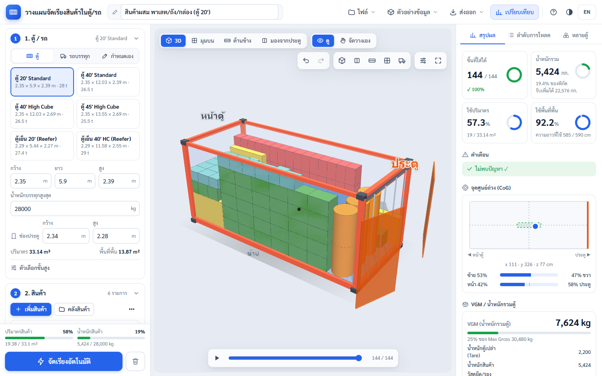
ถ้าอยากลองก่อน ให้กดเมนู ตัวอย่างข้อมูล ที่แถบด้านบน แล้วเลือกงานตัวอย่างหนึ่งงาน ระบบจะจัดเรียงให้ดูทันที
ความช่วยเหลือในโปรแกรม — ครั้งแรกที่เปิดจะมีทัวร์แนะนำสั้น ๆ ชี้ทีละจุด (เปิดใหม่ได้ที่เมนูไฟล์ → ทัวร์แนะนำการใช้งาน) ปุ่ม ? ที่แถบด้านบนเปิดคู่มือนี้ ไอคอน ? เล็ก ๆ ข้างหัวข้อต่าง ๆ เปิดคู่มือตรงเรื่องนั้น ส่วนเมนูไฟล์ → สรุป 1 หน้า ใช้พิมพ์ติดหน้างาน
2ขั้นตอนที่ 1 เลือกตู้หรือรถ
เลือกแท็บด้านบนก่อน แล้วกดการ์ดตู้หรือรถที่ต้องการ ขนาดภายในและน้ำหนักบรรทุกจะใส่ให้อัตโนมัติ
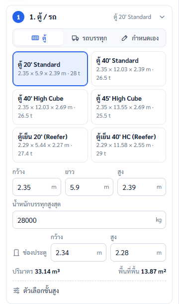
| แท็บ | มีอะไรบ้าง |
|---|---|
| ตู้ | ตู้ 20', 40', 40' High Cube, 45' High Cube, ตู้เย็น 20' และ 40' |
| รถบรรทุก | กระบะตู้ทึบ 4 ล้อ, รถ 4 ล้อใหญ่, รถ 6 ล้อ, รถ 10 ล้อ |
| กำหนดเอง | ขนาดที่กรอกเอง และ Preset ที่บันทึกไว้ |
แก้ขนาด — กรอกกว้าง ยาว สูง (เมตร) และน้ำหนักบรรทุกสูงสุด (กก.) ได้เลย ค่าในโปรแกรมเป็นค่ามาตรฐานโดยประมาณ ควรแก้ให้ตรงกับรถหรือตู้ที่ใช้จริง
ช่องประตู — ประตูมักเล็กกว่าขนาดภายใน เช่น ตู้ 20' ช่องประตูสูง 2.28 ม. แต่ภายในสูง 2.39 ม. สินค้าที่ใหญ่กว่าช่องประตูจะไม่ถูกใส่ และมีป้าย "เกินประตู" ในรายการสินค้า
ตัวเลือกขั้นสูง (กดที่ "ตัวเลือกขั้นสูง" ใต้ช่องขนาด)
- พื้นรับน้ำหนัก (กก./ตร.ม.) — ระบบจะไม่ซ้อนสินค้าหนักสูงเกินที่พื้นรับได้
- น้ำหนักตู้เปล่าและ Max Gross (เฉพาะตู้คอนเทนเนอร์) — ใช้คำนวณ VGM
- ค่าขนส่ง/เที่ยว — ใช้เปรียบเทียบความคุ้มค่าระหว่างตัวเลือก
- ประเภทรถ — กำหนดโมเดลรถและตำแหน่งเพลา ตู้คอนเทนเนอร์ค่าเริ่มต้นไม่มีรถ ถ้าต้องการดูน้ำหนักลงเพลาตอนลากตู้ ให้เลือก "หัวลาก + หางพ่วง"
- น้ำหนักลงเพลา (เฉพาะรถ) — แก้น้ำหนักรถเปล่า พิกัดเพลา และ GVW ให้ตรงกับเล่มทะเบียนรถ
- บันทึกเป็น Preset — เก็บขนาดที่แก้ไว้ใช้ครั้งต่อไป จะอยู่ในแท็บ "กำหนดเอง"
กระบะเปิด (ไม่มีตู้ทึบ) — ในแท็บรถบรรทุกมี 3 แบบ: ตอนเดียว, แค็บ, 4 ประตู แต่ละยี่ห้อขนาดต่างกัน ให้แก้ค่าในกรอบ "กระบะเปิด" ใต้ช่องขนาด (แทนช่องประตู)
- ผนังกระบะสูง, พื้นกระบะสูงจากถนน และสูงรวมไม่เกิน (จากถนน) — ความสูงที่วางสินค้าได้ = สูงรวม − พื้นกระบะ ระบบคำนวณให้เอง ในภาพเป็นกรอบเส้นประสีแดง "สูงสุด … ซม."
- ซุ้มล้อ (ยื่นจากผนัง ยาว สูง และตำแหน่ง) — เป็นพื้นที่ห้ามวาง ระบบจัดเรียงเลี่ยงให้ แต่วางทับหลังซุ้มล้อได้ ในภาพ 2D เป็นลายเส้นทแยงสีแดง
- ห้ามยื่นเกินท้ายกระบะ — สินค้าต้องอยู่ภายในความยาวกระบะ
- สินค้าที่สูงเกินผนังกระบะ — ส่วน "วัสดุยึดที่แนะนำ" จะบอกจำนวนสายรัด (รัดขวาง และรัดตามยาวเมื่อสูงเกิน 30 ซม.) พร้อมผ้าใบคลุม ในภาพ 3D เป็นเส้นสีเหลืองครอบสินค้า
ค่าเริ่มต้น (ผนัง 47 ซม., พื้น 80 ซม., สูงรวม 2.50 ม.) เป็นค่าประมาณ ควรตรวจกับรถจริงและกฎหมายที่ใช้ แล้วกด "บันทึกเป็น Preset" เก็บไว้แยกตามรุ่นรถ ลองดูตัวอย่างได้ที่เมนูตัวอย่างข้อมูล → "กล่องบนกระบะเปิด ตอนเดียว"
3ขั้นตอนที่ 2 ใส่รายการสินค้า
ใส่สินค้าได้ 3 ทาง: กด เพิ่มสินค้า กรอกทีละรายการ, กด คลังสินค้า เลือกสินค้าที่เคยบันทึกไว้ หรือนำเข้าไฟล์ Excel/CSV จากเมนู ⋯ ข้างปุ่ม
ช่องในฟอร์มสินค้า
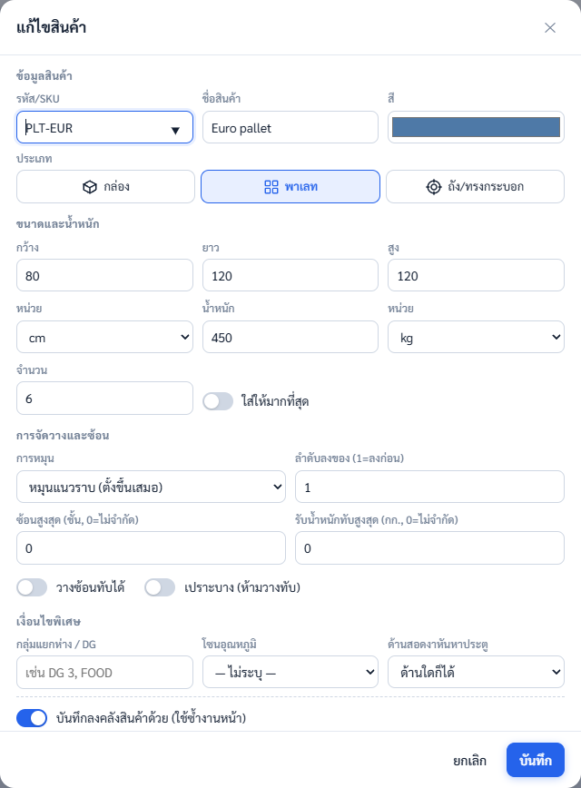
| ช่อง | ใส่อะไร |
|---|---|
| รหัส/SKU, ชื่อ, สี | สีใช้แยกสินค้าในภาพ 3D |
| ประเภท | กล่อง, พาเลท หรือถัง/ทรงกระบอก (ถังใส่เส้นผ่านศูนย์กลางแทนกว้าง/ยาว) |
| กว้าง × ยาว × สูง | เลือกหน่วยได้: cm, mm, m, inch |
| น้ำหนัก | ต่อชิ้น เป็น kg หรือ lb |
| จำนวน | จำนวนที่ต้องการส่ง หรือเปิด "ใส่ให้มากที่สุด" |
| การหมุน | หมุนแนวราบ (ตั้งขึ้นเสมอ), ทุกทิศทาง หรือห้ามหมุน |
| ลำดับลงของ | 1 = ลงก่อน ใช้เมื่อส่งหลายจุด |
| ซ้อนสูงสุด / รับน้ำหนักทับ | ใส่ 0 = ไม่จำกัด |
| วางซ้อนทับได้ / เปราะบาง | ปิด "วางซ้อนทับได้" หรือเปิด "เปราะบาง" = ห้ามวางอะไรทับ |
| เงื่อนไขพิเศษ | กลุ่มแยกห่าง/DG, โซนอุณหภูมิ, ด้านสอดงาของพาเลท |
ปรับจำนวนในรายการ — กด − / + หรือพิมพ์ตัวเลขในช่องได้เลย ปุ่ม MAX = ใส่ให้มากที่สุด ชี้เมาส์ที่รายการจะมีปุ่ม วางลงตู้ 1 ชิ้น / แก้ไข / คัดลอก / บันทึกลงคลัง / ลบ ตัวเลขสีเขียว เช่น 6/6 คือใส่ได้ครบ สีส้มคือใส่ได้ไม่ครบ
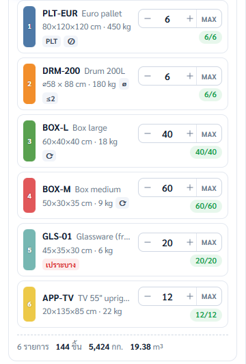
นำเข้า Excel/CSV — กด ⋯ → ไฟล์ตัวอย่าง เพื่อดาวน์โหลดแบบฟอร์ม กรอกแล้วกด ⋯ → นำเข้า CSV/Excel หัวคอลัมน์ใช้ได้ทั้งภาษาไทยและอังกฤษ หน่วยผสมกันได้ ช่องจำนวนใส่คำว่า max ได้
คลังสินค้า — กด คลังสินค้า ค้นหา ติ๊กเลือกหลายรายการพร้อมใส่จำนวน แล้วกด เพิ่มลงงาน สินค้าใหม่ที่กรอกผ่านฟอร์มจะบันทึกลงคลังให้อัตโนมัติ ครั้งต่อไปพิมพ์รหัสในฟอร์ม ระบบจะกรอกข้อมูลที่เหลือให้ คลังสินค้าเก็บไว้ในเครื่องที่ใช้เท่านั้น
ถัง/ทรงกระบอก — เลือกประเภท "ถัง/ทรงกระบอก" แล้วใส่เส้นผ่านศูนย์กลางและความสูง ถังตั้งจะเรียงแบบตารางหรือสลับฟันปลา ระบบเลือกแบบที่ใส่ได้มากกว่าให้เอง เช่น ถัง ⌀50 ซม. ในตู้ 20' ได้ 52 ใบต่อชั้นแทน 44 ใบ ใช้ "หมุนแนวราบ" เพื่อให้ถังตั้งเสมอ ถ้าถังวางบนพาเลท ให้ใส่เป็นพาเลทตามขนาดรวมแทน
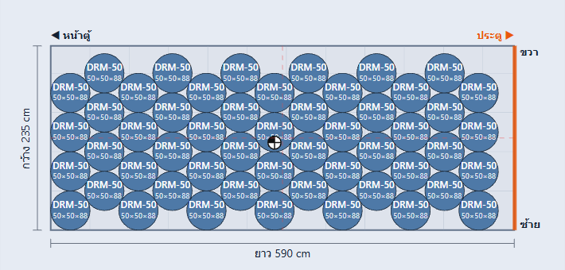
เงื่อนไขพิเศษทำงานอย่างไร
- กลุ่มแยกห่าง/DG (เช่น DG 3, FOOD) — สินค้าต่างกลุ่มจะอยู่ห่างกันอย่างน้อยตามระยะที่ตั้ง (ค่าเริ่มต้น 150 ซม.)
- โซนอุณหภูมิ — แช่แข็งอยู่หน้าสุด (ใกล้เครื่องทำความเย็น) → แช่เย็น → อุณหภูมิปกติ
- ด้านสอดงา (พาเลท) — บังคับให้ด้านที่รถยกสอดงาหันหาประตู
4ขั้นตอนที่ 3 จัดเรียงอัตโนมัติ
เลือกเป้าหมาย แล้วกดปุ่มสีน้ำเงิน จัดเรียงอัตโนมัติ ที่มุมซ้ายล่าง ระบบใช้เวลาคำนวณไม่เกินประมาณ 2.5 วินาที กดปุ่มเดิมซ้ำเพื่อหยุดกลางคันได้
| เป้าหมาย | เหมาะกับ |
|---|---|
| จำนวนชิ้นมากที่สุด | อยากใส่ให้ได้มากชิ้นที่สุด |
| ใช้พื้นที่คุ้มที่สุด | งานทั่วไป เติมปริมาตรให้เต็มที่สุด |
| น้ำหนักสมดุลที่สุด | ของหนัก ต้องการจุดศูนย์ถ่วงอยู่กลางตู้ |
| ตามลำดับลงของ | ส่งหลายจุด ของที่ลงก่อนอยู่ใกล้ประตู |
ดูความจุก่อนกด — เหนือปุ่มมีแถบปริมาตรและน้ำหนักสินค้าเทียบกับตู้ ถ้าเกิน 100% จะมีแถบสีแดงบอกว่าต้องใช้ประมาณกี่ตู้/คัน
ระบบจัดเรียงตามกฎเหล่านี้เสมอ
- ไม่มีกล่องชนกัน ไม่ล้นตู้ และทุกกล่องมีฐานรองรับ ไม่ลอยกลางอากาศ
- หยุดใส่เมื่อถึงน้ำหนักบรรทุกสูงสุด และแจ้งเตือน
- ของหนักไม่วางบนของเบา ของเปราะบางไม่ถูกทับ และไม่ซ้อนเกินจำนวนชั้นที่กำหนด
- สินค้าที่ระบุจำนวนได้ที่ก่อนสินค้าแบบ "ใส่ให้มากที่สุด"
- ถังทรงกระบอกเรียงสลับฟันปลาเมื่อใส่ได้มากกว่า
ตัวเลือกขั้นสูง (ใต้การ์ดเป้าหมาย)
- ฐานรองรับขั้นต่ำ — สัดส่วนฐานกล่องที่ต้องวางบนของใต้ล่าง (ค่าเริ่มต้น 75%)
- เวลาคำนวณ — ให้เวลานานขึ้น อาจได้ผลดีขึ้นเล็กน้อย
- ระยะห่างระหว่างกลุ่มแยก — ใช้กับเงื่อนไขกลุ่มแยกห่าง/DG
- ของหนักไว้ล่าง — เปิดไว้เป็นค่าเริ่มต้น
- จัดให้น้ำหนักลงเพลาไม่เกินพิกัด — ถ้าเกิน ระบบจะเลื่อนสินค้าทั้งกองและแจ้งให้ใช้ไม้ค้ำ
- คงตำแหน่งชิ้นที่ล็อก (Hybrid) — ชิ้นที่ล็อกไว้จะไม่ถูกย้าย ดูหัวข้อปรับตำแหน่งเอง
ปุ่มถังขยะข้างปุ่มจัดเรียง = ล้างการจัดวางทั้งหมด (รายการสินค้ายังอยู่)
5อ่านผลลัพธ์
ดูผลได้ 2 ที่: ภาพตรงกลางบอกว่าสินค้าอยู่ตรงไหน และแผง สรุปผล ด้านขวาบอกตัวเลขและคำเตือน ทั้งสองส่วนอัปเดตพร้อมกันทุกครั้งที่มีการเปลี่ยนแปลง
มุมมองภาพ (ปุ่มมุมซ้ายบนของภาพ)
- 3D — ลากเมาส์เพื่อหมุน เลื่อนล้อเมาส์เพื่อซูม คลิกขวาค้างเพื่อเลื่อนภาพ บนมือถือใช้นิ้วลากและจีบซูม
- มุมบน / ด้านข้าง / มองจากประตู — ภาพ 2 มิติ มีรหัสสินค้าและขนาดบนกล่อง กล่องที่เล็กเกินจะใส่รหัสได้จะแสดงเป็นเลขลำดับสินค้าแทน (เลขเดียวกับป้ายสีหน้ารายการ) ชี้เมาส์ค้างเพื่อดูรหัสเต็ม คลิกกล่องเพื่อดูรายละเอียด
- ปุ่มมุมกล้องมุมขวาบน — มุมเฉียง, มองจากประตู, ด้านข้าง, ด้านบน และมองหัวรถ
- ปุ่มการแสดงผล (ไอคอนแถบเลื่อน) — ปรับผนังให้โปร่งใส, ตัดภาพตามความยาวตู้, ดูทีละชั้น, ซ่อนบาง SKU, เปิด/ปิดโมเดลรถ เปลี่ยนสีหัวรถและใส่โลโก้
- แถบเล่นด้านล่างภาพ — กด ▶ เพื่อดูแอนิเมชันลำดับการโหลดทีละชิ้น
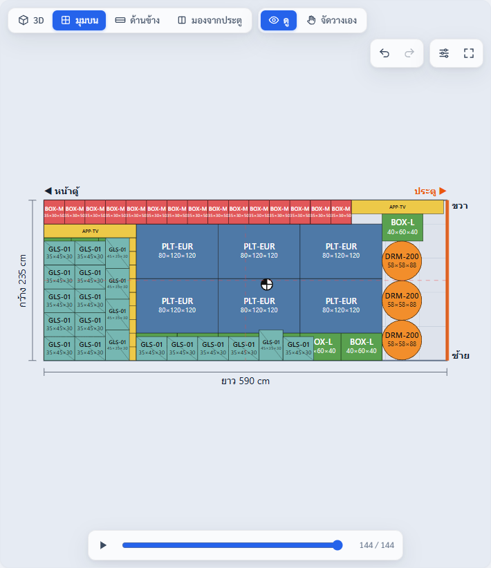
แกนและระยะ (อยู่ในปุ่มการแสดงผล) — บอกว่าพิกัด x, y, z นับจากตรงไหน: X = กว้าง (ซ้าย → ขวา), Y = ยาว (หน้าตู้ → ประตู), Z = สูง (จากพื้นตู้ หรือพื้นกระบะสำหรับรถ ไม่ใช่พื้นถนน) จุด 0,0,0 คือมุมหน้าตู้ ด้านซ้าย ที่พื้น เปิด/ปิดได้ 4 อย่าง:
- ไอคอนแกน X Y Z มุมล่างขวาของภาพ หมุนตามกล้อง (ค่าเริ่มต้นเปิด)
- จุด 0,0,0 และเส้นประบอกระยะ x, y, z ของกล่องที่เลือก ช่อง x, y, z ในการ์ดกล่องจะมีสีและคำบอกว่าวัดจากไหน (ค่าเริ่มต้นเปิด)
- ไม้บรรทัดตามขอบพื้น เลือกให้ขึ้นเฉพาะโหมดจัดวางเองหรือทุกโหมด และขีดทุก 10 / 25 / 50 / 100 ซม.
- ลูกบาศก์มุมมอง คลิกหน้าลูกบาศก์ (บน / หน้าตู้ / ประตู / ซ้าย / ขวา) เพื่อหมุนกล้อง ปุ่ม ⌂ กลับมุมเริ่มต้น
ปุ่ม "ปิดทั้งหมด (หน้าจอแบบเดิม)" ทำให้หน้าจอกลับเป็นแบบเดิม ส่วนนี้มีผลเฉพาะการแสดงบนจอ ไม่เปลี่ยนการจัดเรียง ตัวเลข หรือไฟล์ที่ส่งออก โปรแกรมจำค่าที่เลือกไว้ในเครื่องนั้น
รูปแบบภาพและการระบายสี (อยู่ในปุ่มการแสดงผลเช่นกัน)
- รูปแบบภาพ: แบบเรียบ / แบบสมจริง — แบบสมจริงแสดงตู้เหล็กลอน พื้นไม้ ประตูเปิดกางแนบผนัง เลขตู้และน้ำหนักบนคานเหนือประตู (เลขตู้ดึงจากข้อมูลการส่งออก) กล่องเป็นกล่องกระดาษมีเทปและป้ายสีตาม SKU พาเลทมีไม้และฟิล์มหุ้ม ถังมีลอน มีเงา และคนเทียบขนาด 1.70 ม. (ปิดได้) ผนังด้านที่บังกล้องจะหายเอง ตัวตู้เหล็กใช้กับตู้คอนเทนเนอร์ ส่วนรถใช้ตัวรถเดิม แบบสมจริงใช้เครื่องหนักกว่า งานที่มีเกิน 1,500 ชิ้นจะไม่แสดงป้ายข้างกล่องและเงาสินค้า
- ระบายสีตาม: SKU / น้ำหนัก / จุดส่ง / เปราะบาง — ใช้กับทั้งภาพ 3D และ 2D มีคำอธิบายสีมุมขวาบนของภาพ น้ำหนัก: สีอ่อน = เบา สีเข้ม = หนัก ควรเห็นสีเข้มอยู่ล่าง · จุดส่ง: สีตามลำดับลงของ จุดที่ลงก่อนควรอยู่ใกล้ประตู · เปราะบาง: สีแดงเฉพาะของเปราะบาง ของอื่นสีเทาอ่อน ใช้เช็กว่าไม่มีอะไรทับ
- เล่นลำดับโหลดแบบเลื่อนเข้าจากประตู — กด ▶ ที่แถบเล่น กล่องจะเลื่อนเข้าจากทางประตูทีละชิ้นแล้ววางลงตามลำดับจริง เลือกความเร็ว 1× / 2× / 4× ที่ท้ายแถบเล่น ปิดสวิตช์นี้ถ้าอยากได้แบบเดิม (กล่องโผล่ทันที)
ค่าเริ่มต้นคือแบบเรียบและสีตาม SKU เหมือนเดิม ทั้งหมดนี้เปลี่ยนแค่ภาพบนจอ ไม่เปลี่ยนการจัดเรียงหรือตัวเลข
วัสดุยึดที่แนะนำ (แผงสรุปผล) — หลังจัดเรียง ระบบหาช่องว่างที่สินค้าอาจเลื่อนได้และแนะนำวัสดุยึดให้
- ช่องแคบ (ค่าเริ่มต้นไม่เกิน 45 ซม.) → ถุงลม พร้อมขนาดและจำนวน
- ช่องหน้าประตู → ไม้ค้ำขวางยึดกับเสามุมตู้ (ประตูรับน้ำหนักสินค้าไม่ได้)
- ช่องกว้างเกินกว่าถุงลมรับได้ → คำเตือนให้เติมพาเลทเปล่าหรือไม้ค้ำ
คลิกรายการเพื่อดูตำแหน่งในภาพ 3D (ถุงลมและไม้จะกะพริบ) หรือเปิดสวิตช์ "แสดงวัสดุยึด" ในปุ่มการแสดงผล ปุ่ม "ใช้น้ำหนักนี้ใน VGM" ใส่น้ำหนักวัสดุยึดให้เอง ปุ่มตั้งค่า (ไอคอนแถบเลื่อน) ใช้แก้ขนาดถุงลมที่บริษัทมี และช่องกว้างสูงสุดที่ใช้ถุงลม รายการวัสดุยึดอยู่ในรายงาน PDF และใบงานโหลดทีละขั้นด้วย (แต่ละขั้นบอกเฉพาะชิ้นที่ใช้ในช่วงนั้น) เป็นการวางแผนเบื้องต้น ตรวจการยึดสินค้าหน้างานทุกครั้ง
ในภาพมีป้าย "หน้าตู้" และ "ประตู" (สีส้ม) คำว่า ซ้าย/ขวา ในโปรแกรมหมายถึงเมื่อยืนที่ประตูแล้วมองเข้าไปในตู้
แผงสรุปผล
| ส่วน | บอกอะไร |
|---|---|
| ชิ้นที่ใส่ได้ | ใส่ได้กี่ชิ้นจากที่ต้องการ และเหลือกี่ชิ้น |
| น้ำหนักรวม | เทียบกับพิกัดบรรทุก และรับเพิ่มได้อีกเท่าไร |
| ใช้ปริมาตร / ใช้พื้นที่พื้น | ใช้พื้นที่ตู้ไปกี่เปอร์เซ็นต์ |
| คำเตือน | ปัญหาที่ต้องแก้ คลิกคำเตือนเพื่อเลือกกล่องที่มีปัญหา |
| จุดศูนย์ถ่วง | จุดสีน้ำเงินควรอยู่ในกรอบสีเขียวตรงกลาง พร้อมสัดส่วนซ้าย/ขวา และหน้า/ประตู |
| VGM (ตู้คอนเทนเนอร์) | น้ำหนักรวมตู้ = น้ำหนักตู้เปล่า + สินค้า + วัสดุยึด |
| น้ำหนักลงเพลา (รถ) | น้ำหนักที่เพลาหน้า/หลังและ GVW เทียบพิกัด |
| แยกตาม SKU | ต้องการ / ใส่ได้ / เหลือ และน้ำหนักของแต่ละสินค้า |
สีของกล่องคือสีของสินค้า — แต่ละ SKU มีสีของตัวเอง ตรงกับป้ายสีที่มีเลขลำดับหน้ารายการในแผงสินค้า ชี้เมาส์ที่กล่องจะเห็นรหัส ขนาด น้ำหนัก และลำดับโหลด กรอบสีเหลืองคือกล่องที่เลือกอยู่ ภาพมุมบนแสดงเฉพาะกล่องชั้นบนสุด ถ้าอยากดูชั้นล่างให้เลือกชั้นในปุ่มการแสดงผล หรือกดชื่อ SKU ใน "แสดง SKU" เพื่อซ่อนบางสินค้า
ความหมายของสี
- กล่องสีแดงในภาพ หรือคำเตือนสีแดง = ต้องแก้ก่อนโหลดจริง เช่น ชนกัน, ล้นตู้, ลอย, น้ำหนักเกิน, ใหญ่เกินประตู
- คำเตือนสีส้ม = ควรดู เช่น จุดศูนย์ถ่วงเอียง, ของหนักอยู่บนของเบา
- คำเตือนสีฟ้า = ข้อมูล เช่น ระบบเลื่อนสินค้าทั้งกองเพื่อความสมดุล ต้องใช้ไม้ค้ำ
- แถบหรือวงแหวนสีเขียว / ส้ม / แดง = ปกติ / ใกล้เต็ม (เกิน 90%) / เกินพิกัด
ถ้าใส่ไม่ครบ แผงสรุปจะแนะนำว่าต้องใช้กี่ตู้/คัน และตู้ขนาดไหนใส่ได้ครบในคันเดียว กดชื่อตู้ที่แนะนำเพื่อเปลี่ยนและจัดเรียงใหม่ได้ทันที
6ปรับตำแหน่งเอง (โหมดจัดวางเอง)
กดปุ่มรูปมือ จัดวางเอง เหนือภาพ 3D แล้วลากกล่องด้วยเมาส์ได้เลย กล่องจะติดกริด ติดผนัง และติดกล่องข้างเคียงให้ ถ้าวางแล้วชนหรือล้นตู้ กล่องจะเป็นสีแดงทันที ตัวเลขในแผงสรุปและภาพ 2D อัปเดตตาม
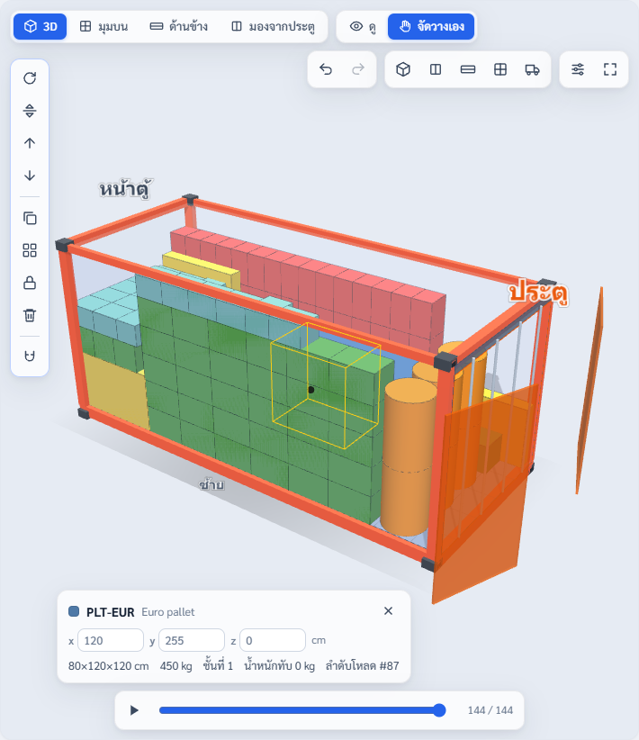
เครื่องมือและปุ่มลัด (แถบไอคอนแนวตั้งด้านซ้ายของภาพ)
| ทำอะไร | ปุ่มลัด |
|---|---|
| ย้ายกล่อง | ลากด้วยเมาส์ หรือปุ่มลูกศร (กด Shift ค้าง = ทีละ 1 ซม.) |
| หมุนแนวราบ | R |
| พลิกตั้ง/นอน | T |
| ยกขึ้น / ลดลงทีละชั้น | PgUp / PgDn |
| คัดลอก 1 ชิ้น | Ctrl + D |
| วางซ้ำเป็นแถว × คอลัมน์ × ชั้น | ปุ่ม Array |
| ล็อก / ปลดล็อกตำแหน่ง | L |
| ลบ | Delete |
| ย้อนกลับ / ทำซ้ำ | Ctrl + Z / Ctrl + Y |
| ยกเลิกการเลือก | Esc |
การ์ดกล่องที่เลือก (มุมซ้ายล่างของภาพ) แสดงขนาด น้ำหนัก ชั้นที่ น้ำหนักที่ทับอยู่ และลำดับโหลด พิมพ์ตำแหน่ง x, y, z (ซม.) เพื่อวางแบบแม่นยำได้ ปุ่มแม่เหล็กในแถบเครื่องมือใช้ตั้งค่าการติดกริด ติดผนัง ติดสินค้า และแรงโน้มถ่วง
เพิ่มกล่องเองทีละชิ้น — ชี้เมาส์ที่สินค้าในรายการแล้วกด + (วางลงตู้ 1 ชิ้น) ระบบจะหาที่ว่างแรกที่วางได้ให้
Hybrid: ล็อกบางชิ้น แล้วให้ระบบเติมที่เหลือ
- วางชิ้นสำคัญในตำแหน่งที่ต้องการ
- เลือกชิ้นนั้นแล้วกด L เพื่อล็อก (จะมีเส้นขอบเข้ม)
- กด จัดเรียงอัตโนมัติ ระบบจะจัดสินค้าที่เหลือรอบชิ้นที่ล็อกไว้ (ต้องเปิด "คงตำแหน่งชิ้นที่ล็อก" ในตัวเลือกขั้นสูง ซึ่งเปิดไว้เป็นค่าเริ่มต้น)
7หน้างานโหลดสินค้า
แท็บ ลำดับการโหลด ในแผงด้านขวาแบ่งงานเป็นขั้นจากหน้าตู้ไปหาประตู แต่ละขั้นบอกว่าสินค้าอะไรกี่ชิ้น วางที่ระยะกี่ซม. จากหน้าตู้ สูงถึงเท่าไหร่ คลิกขั้นใดก็ได้เพื่อดูภาพถึงขั้นนั้น กด ▶ เล่นลำดับ หรือ "แสดงทั้งหมด" เพื่อกลับมาดูภาพเต็ม
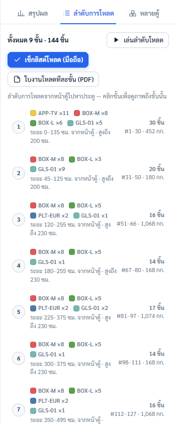
เช็กลิสต์โหลดบนมือถือ/แท็บเล็ต
- เปิดแท็บลำดับการโหลด แล้วกด เช็กลิสต์โหลด (มือถือ)
- กรอกชื่อผู้โหลด
- ดูผังมุมบนของขั้นนั้น ชิ้นที่ต้องวางเป็นสีปกติ ชิ้นที่วางแล้วเป็นสีจาง
- วางสินค้าแล้วกด + นับทีละชิ้น หรือกด ✓ เมื่อครบทั้ง SKU บน Chrome Android กด สแกน เพื่อสแกนบาร์โค้ดที่ตรงกับรหัสสินค้าได้
- กด ขั้นถัดไป ระบบบันทึกเวลาเสร็จของแต่ละขั้นให้
- เสร็จงานกด ส่งออกบันทึกการโหลด (CSV) เพื่อเก็บประวัติ
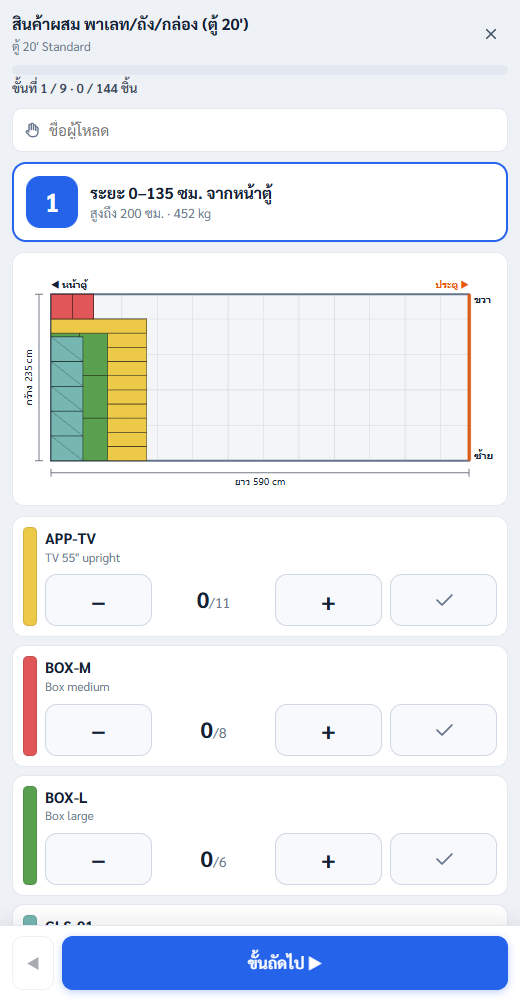
ถ้าปิดหน้าเช็กลิสต์กลางคัน เปิดใหม่จะกลับมาที่ขั้นเดิม (ต้องใช้เครื่องเดิมและแผนการจัดเรียงเดิม) ปุ่ม เริ่มนับใหม่ ใช้ล้างจำนวนที่นับไว้
ใบงานโหลดทีละขั้น (พิมพ์) — กด ใบงานโหลดทีละขั้น (PDF) ในแท็บลำดับการโหลด หรือเมนูส่งออก ได้กระดาษ A4 แนวนอนหน้าละขั้น มีภาพ 3D ผังมุมบน รายการสินค้า ช่องติ๊ก และช่องลงชื่อผู้โหลด เหมาะกับทีมที่ไม่ใช้มือถือหน้างาน
8พิมพ์และส่งออกเอกสาร
เอกสารทั้งหมดอยู่ในเมนู ส่งออก (ไอคอนลูกศรลงที่แถบด้านบน) ไฟล์ PDF จะเปิดหน้าพิมพ์ของเบราว์เซอร์ ให้เลือก "บันทึกเป็น PDF" หรือสั่งพิมพ์ได้เลย
| เอกสาร | ใช้ทำอะไร |
|---|---|
| รายงาน PDF | สรุปแผนการโหลด: ภาพ 3D, ผังมุมบน/ด้านข้าง/ประตู, ตัวเลขสรุป, จุดศูนย์ถ่วง, น้ำหนักลงเพลา, VGM และรายการสินค้า |
| ใบงานโหลดทีละขั้น (PDF) | หน้าละขั้นสำหรับทีมหน้างาน ดูหัวข้อหน้างานโหลดสินค้า |
| ใบส่งของ | รายการสินค้าที่อยู่ในตู้/รถจริง แยกตามจุดส่ง |
| Excel (.xlsx) / CSV | ตารางตำแหน่งทุกชิ้น (x, y, z, ขนาด, ลำดับโหลด) และสรุปแยก SKU นำไปใช้ต่อในระบบอื่น |
| รายการสินค้า (CSV) | เฉพาะรายการสินค้า ใช้นำเข้ากลับมาในงานใหม่ |
ใบส่งของ — กด ส่งออก → ใบส่งของ หรือปุ่ม "ใบส่งของ" ใต้ตารางแยกตาม SKU ในแผงสรุป
- กรอกข้อมูลผู้ส่ง ผู้รับ เลขที่เอกสาร ทะเบียนรถหรือเลขตู้ (กรอกครั้งเดียว ระบบจำไว้ให้)
- ถ้ามีหลายจุดส่ง ระบบแยกใบตามลำดับลงของให้ จุดละ 1 ใบ
- เลือกจำนวนสำเนา เช่น ต้นฉบับ + สำเนา แล้วกดพิมพ์
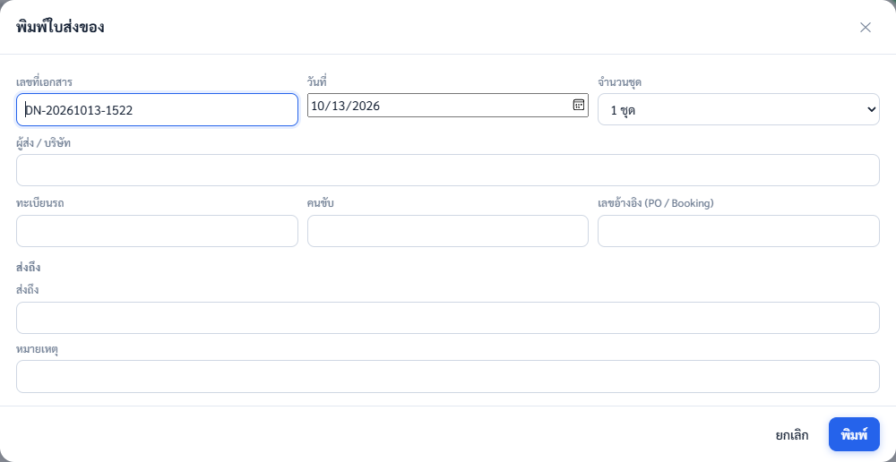
ใบส่งของนับเฉพาะชิ้นที่ใส่ตู้ได้จริง ชิ้นที่ใส่ไม่ได้จะไม่อยู่ในใบ ดังนั้นควรจัดเรียงให้เสร็จก่อนพิมพ์
ข้อมูลการส่งออกและ VGM (เฉพาะตู้คอนเทนเนอร์) — กดปุ่ม "ข้อมูลการส่งออก" ในส่วน VGM ของแผงสรุป แล้วกรอกเลขตู้ เลขซีล เลข Booking ชื่อเรือ และผู้รับรอง VGM ระบบตรวจเลขตู้ตามมาตรฐาน ISO 6346 ถ้าตัวเลขตรวจสอบ (หลักสุดท้าย) ผิดจะมีคำเตือน ใส่น้ำหนักวัสดุยึด เช่น ไม้ค้ำและถุงลม เพื่อให้ VGM ครบ ข้อมูลเหล่านี้จะไปอยู่ในรายงาน PDF และใบส่งของ
ไฟล์งาน (JSON) — เมนูไฟล์ → บันทึก (Ctrl+S) ได้ไฟล์ .json ที่เก็บทุกอย่าง ใช้ส่งต่อให้เพื่อนร่วมงานเปิดดูหรือแก้ต่อได้
9เมื่อสินค้าใส่ตู้เดียวไม่พอ
แท็บหลายตู้ (แผงด้านขวา) — กด คำนวณแบ่งหลายตู้ ระบบจะแบ่งสินค้าทั้งหมดลงตู้/รถประเภทที่เลือกอยู่ ทีละตู้จนครบ แต่ละตู้บอกจำนวนชิ้น น้ำหนัก และปริมาตรที่ใช้ กด เปิดดู เพื่อแสดงตู้นั้นในภาพหลัก จะมีแถบบอกว่ากำลังแสดงตู้ที่เท่าไร จากนั้นพิมพ์รายงานหรือใบส่งของของตู้นั้นได้เลย
เปรียบเทียบตัวเลือก — กดปุ่ม เปรียบเทียบ ที่แถบด้านบน ติ๊กตู้/รถที่อยากเทียบ แล้วกด คำนวณเปรียบเทียบ ตารางจะบอกว่าแต่ละตัวเลือกต้องใช้กี่คัน/ตู้ ใช้พื้นที่กี่เปอร์เซ็นต์ ค่าใช้จ่ายรวม และค่าใช้จ่ายต่อชิ้น ตัวเลือกที่คุ้มที่สุดมีป้าย "คุ้มที่สุด" กด ใช้ตัวเลือกนี้ เพื่อเปลี่ยนตู้และจัดเรียงใหม่
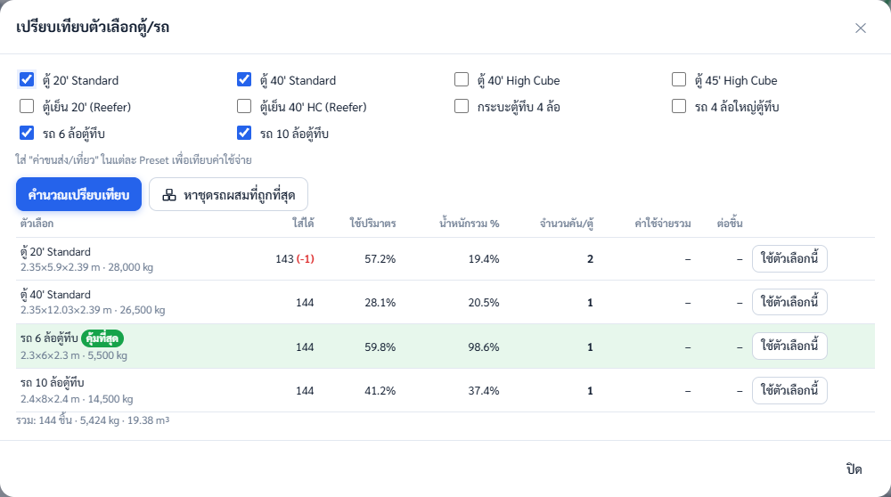
หาชุดรถผสมที่ถูกที่สุด — ในหน้าเปรียบเทียบ ระบบจะลองผสมรถหลายขนาด เช่น รถ 10 ล้อ 1 คัน + รถ 6 ล้อ 1 คัน แทนที่จะใช้รถ 10 ล้อ 2 คัน แล้วบอกว่าประหยัดกว่าเท่าไร กด เปิดในแท็บหลายตู้ เพื่อดูทีละคัน
ใส่ "ค่าขนส่ง/เที่ยว" ในตัวเลือกขั้นสูงของตู้/รถแต่ละแบบก่อน ผลเปรียบเทียบจะเป็นเงินบาท ถ้าไม่ใส่ ระบบจะเลือกชุดที่ปริมาตรตู้รวมน้อยที่สุดแทน
10บันทึกงาน ภาษา และใช้งานออฟไลน์
บันทึกอัตโนมัติ — ทุกการเปลี่ยนแปลงถูกเก็บไว้ในเบราว์เซอร์ทันที ปิดแล้วเปิดใหม่จะกลับมาที่งานล่าสุด แต่เก็บได้ทีละงาน และอยู่เฉพาะเครื่องและเบราว์เซอร์ที่ใช้อยู่
เก็บงานไว้หลายงาน (เมนูไฟล์ ไอคอนโฟลเดอร์)
- บันทึก (Ctrl+S) — ดาวน์โหลดไฟล์ .json ตั้งชื่องานที่ช่องชื่อด้านบนก่อน ไฟล์จะใช้ชื่อนั้น
- เปิด — เลือกไฟล์ .json ที่เคยบันทึก งานจะกลับมาครบทั้งตู้ สินค้า และตำแหน่งที่จัดไว้
- ใหม่ — เริ่มงานว่าง ควรกดบันทึกงานเดิมก่อน เพราะงานใหม่จะเขียนทับงานที่บันทึกอัตโนมัติ
ภาษาและธีม — ปุ่ม EN / TH มุมขวาบนสลับภาษาไทยกับอังกฤษ (เอกสารที่พิมพ์จะใช้ภาษาตามที่เลือก) ปุ่มรูปวงกลมครึ่งสีสลับธีม อัตโนมัติ / สว่าง / มืด
ใช้งานออฟไลน์ — เมื่อเปิดผ่านลิงก์ (http/https) ครบ 1 ครั้ง โปรแกรมจะเก็บไฟล์ไว้ในเครื่อง ครั้งต่อไปใช้ได้แม้ไม่มีอินเทอร์เน็ต (เช่น ในโกดังที่สัญญาณไม่ดี) จะมีแจ้งเตือนว่า "ออฟไลน์" แต่ใช้งานได้ครบทุกอย่าง ถ้าเปิดด้วยการดับเบิลคลิกไฟล์ index.html โหมดออฟไลน์และการติดตั้งจะใช้ไม่ได้ และต้องมีอินเทอร์เน็ตตอนเปิดครั้งแรกเพื่อโหลดตัววาดภาพ 3D
ติดตั้งเป็นแอป — ใช้ได้เมื่อเปิดผ่านลิงก์เท่านั้น
- คอมพิวเตอร์ (Chrome/Edge): กดไอคอนติดตั้งท้ายช่องที่อยู่ หรือเมนู ⋮ → ติดตั้งแอป
- Android (Chrome): เมนู ⋮ → เพิ่มไปยังหน้าจอหลัก
- iPhone/iPad (Safari): ปุ่มแชร์ → เพิ่มไปยังหน้าจอหลัก
บนมือถือ แผงต่าง ๆ จะเรียงต่อกันจากบนลงล่าง เลื่อนหน้าจอเพื่อดูแต่ละส่วน
11คำถามที่พบบ่อยและการแก้ปัญหา
| ปัญหา | สาเหตุและวิธีแก้ |
|---|---|
| ใส่ไม่ครบทั้งที่ปริมาตรยังเหลือ | กล่องต่อกันไม่พอดีเหมือนน้ำ ปกติจะใช้ได้ 80–90% ของปริมาตร ลองเปลี่ยนการหมุนเป็น "ทุกทิศทาง" (ถ้าสินค้าวางตะแคงได้) ลด "ฐานรองรับขั้นต่ำ" หรือเพิ่มเวลาคำนวณ |
| สินค้าบางตัวไม่ถูกใส่เลย | ดูป้ายในรายการสินค้า เช่น "เกินประตู" หรือใหญ่กว่าตู้ หรือน้ำหนักถึงพิกัดแล้ว (คำเตือนในแผงสรุปจะบอก) |
| มีกล่องสีแดงหลังลากเอง | กล่องชนกัน ล้นตู้ หรือลอย คลิกคำเตือนเพื่อเลือกกล่องนั้น แล้วย้ายออก หรือกด Ctrl+Z ย้อนกลับ |
| กล่องเล็กในภาพ 2D มีแต่ตัวเลข | กล่องเล็กเกินจะใส่รหัสสินค้าได้ ตัวเลขคือลำดับสินค้าตามป้ายสีหน้ารายการ ชี้เมาส์ค้างเพื่อดูรหัสเต็ม หรือซูมภาพ |
| จุดศูนย์ถ่วงเอียง | เลือกเป้าหมาย "น้ำหนักสมดุลที่สุด" แล้วจัดเรียงใหม่ ถ้าระบบเลื่อนสินค้าทั้งกอง ให้ใส่ไม้ค้ำตามที่แจ้ง |
| น้ำหนักลงเพลาเกิน | เปิด "จัดให้น้ำหนักลงเพลาไม่เกินพิกัด" และตรวจว่าน้ำหนักรถเปล่าและพิกัดเพลาตรงกับรถจริง |
| หน้าจอไม่เปลี่ยนหลัง IT อัปเดตโปรแกรม | กด Ctrl+F5 เพื่อโหลดใหม่ ถ้าติดตั้งเป็นแอป ให้ปิดแล้วเปิดใหม่ |
| ภาพ 3D ไม่ขึ้น | ใช้ Chrome หรือ Edge รุ่นล่าสุด และต้องมีอินเทอร์เน็ตตอนเปิดครั้งแรก ระหว่างนั้นยังใช้ภาพ 2D ได้ |
| งานหายหลังล้างประวัติเบราว์เซอร์ | งานที่บันทึกอัตโนมัติ คลังสินค้า และ Preset อยู่ในเบราว์เซอร์ จะหายไปด้วย ควรกดบันทึกงานสำคัญเป็นไฟล์ .json เก็บไว้ |
ตัวเลขในโปรแกรมเป็นการวางแผน ก่อนโหลดจริงควรตรวจขนาดตู้/รถ น้ำหนักสินค้าจริง และการยึดสินค้าหน้างานทุกครั้ง พบปัญหาอื่นติดต่อฝ่าย IT พร้อมแนบไฟล์งาน .json
12คำศัพท์ที่ควรรู้
คำที่เจอในโปรแกรมและเอกสาร จัดกลุ่มตามเรื่อง: สินค้าและตู้ → น้ำหนัก → การจัดเรียง
| คำ | ความหมาย |
|---|---|
| SKU | รหัสสินค้า 1 รายการ เช่น BOX-L สินค้าแต่ละ SKU มีสีของตัวเองในภาพ |
| Preset | ชุดขนาดตู้/รถที่บันทึกไว้ใช้ซ้ำ |
| Payload (น้ำหนักบรรทุกสูงสุด) | น้ำหนักสินค้ารวมที่ตู้หรือรถรับได้ ไม่รวมน้ำหนักตัวตู้/ตัวรถ |
| ตู้ High Cube (HC) | ตู้ที่สูงกว่าตู้ปกติประมาณ 30 ซม. ความกว้างและยาวเท่าเดิม |
| ตู้ Reefer | ตู้เย็นควบคุมอุณหภูมิ ขนาดภายในเล็กกว่าตู้ปกติเพราะมีผนังฉนวนและเครื่องทำความเย็น |
| Tare | น้ำหนักตู้เปล่า พิมพ์ไว้ที่ประตูตู้ |
| Max Gross | น้ำหนักรวมสูงสุดที่ตู้รับได้ (ตู้ + สินค้า + วัสดุยึด) |
| VGM (Verified Gross Mass) | น้ำหนักรวมของตู้ที่บรรจุแล้วซึ่งผู้ส่งออกต้องรับรองและแจ้งสายเรือก่อนขึ้นเรือ ตามข้อกำหนด SOLAS = Tare + สินค้า + วัสดุยึด |
| เลขตู้ ISO 6346 | รูปแบบเลขตู้คอนเทนเนอร์: ตัวอักษร 4 ตัว + ตัวเลข 6 หลัก + เลขตรวจสอบ 1 หลัก เช่น MSCU1234566 |
| วัสดุยึด (Dunnage) | ไม้ค้ำ ถุงลม แผ่นรอง ที่ใช้กันสินค้าเลื่อนในตู้ |
| CoG (จุดศูนย์ถ่วง) | จุดที่น้ำหนักสินค้าทั้งหมดถ่วงกันพอดี ควรอยู่กลางตู้ ถ้าเอียงไปข้างใดข้างหนึ่ง รถหรือตู้จะเสียการทรงตัวตอนยกหรือวิ่ง |
| GVW (Gross Vehicle Weight) | น้ำหนักรวมของรถ = รถเปล่า + สินค้า ต้องไม่เกินที่ระบุในเล่มทะเบียน |
| น้ำหนักลงเพลา / พิกัดเพลา | น้ำหนักที่กดลงล้อแต่ละชุด (เพลาหน้า เพลาหลัง) แต่ละเพลามีพิกัดของตัวเอง ถึง GVW ไม่เกินก็อาจเกินพิกัดเพลาได้ถ้าวางของหนักไม่สมดุล |
| พื้นรับน้ำหนัก (Floor load) | น้ำหนักที่พื้นตู้รับได้ต่อพื้นที่ หน่วย กก./ตร.ม. |
| DG (Dangerous Goods) | สินค้าอันตราย เช่น สารไวไฟ สารกัดกร่อน ต้องแยกห่างจากสินค้าบางกลุ่ม ใช้ช่อง "กลุ่มแยกห่าง / DG" |
| ด้านสอดงา (Fork face) | ด้านของพาเลทที่รถยกสอดงาเข้าไปได้ ต้องหันออกหาประตูเพื่อให้ยกออกได้ |
| เรียงสลับฟันปลา | วิธีวางถังกลมให้แต่ละแถวเยื้องกันครึ่งถัง ใส่ได้มากกว่าการเรียงเป็นตาราง |
| Hybrid | วางบางชิ้นเองแล้วล็อกไว้ ให้ระบบจัดเรียงชิ้นที่เหลือรอบ ๆ |
| ใส่ให้มากที่สุด (MAX) | ไม่กำหนดจำนวน ให้ระบบใส่สินค้านั้นจนเต็มพื้นที่ที่เหลือ |